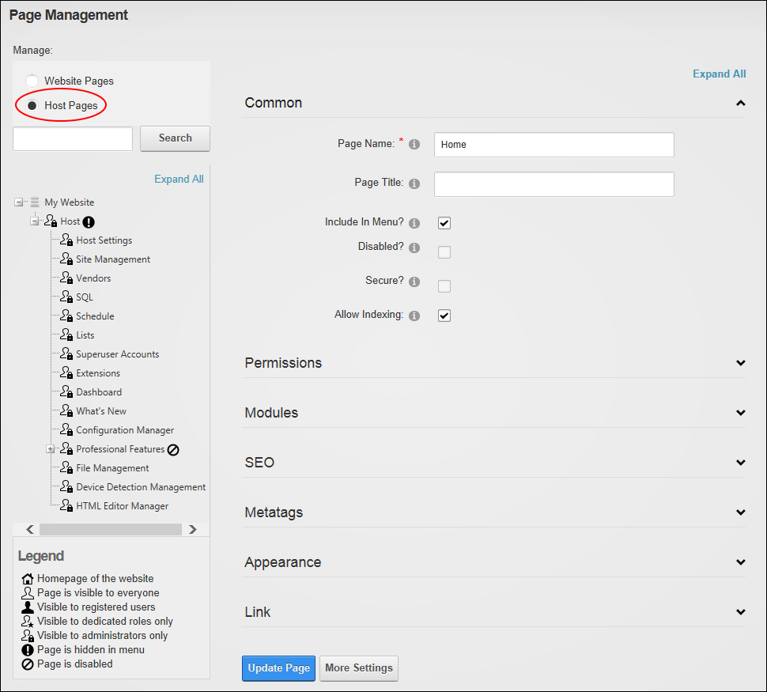

Managing Host Tabs
How to manage the pages (tabs) located under the Host page (Host Console) in the main menu.
- Navigate to Admin >
 Page Management - OR - Go to a Pages modules.
Page Management - OR - Go to a Pages modules.
- At Manage select the Host Pages option. This displays the list of Host pages in the right-hand side navigation tree.

- You can now add new pages and manage existing Host pages.
-
See "Adding One or More Pages"
-
See "Editing Page Settings"